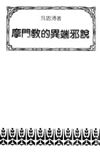

主頁 Home → 求真文選目錄 Books → 摩門教的異端邪說 The Heterodoxy of Mormon

八 摩門教的異端邪說
The Heterodoxy of Mormon
- 1. 摩門教否認聖經的絕對權威
- 2. 摩門教認為神的啟示是隨着時代進步
- 3. 摩門教相信上帝是一位人
- 4. 摩門教認為神在天上生靈子靈女，人在永恒裏仍過夫妻生活
- 5. 摩門教相信人有前生今生來生，不相信天堂地獄
- 6. 摩門教宣傳信徒可以為先人受洗贖罪
- 7. 摩門教的家譜與尋根
- 8. 摩門教信不信神的預定呢？
- 9. 要相信摩門教才能得救
- 10. 摩門教侈言新耶路撒冷將建立在美洲大陸
- 11. 結論